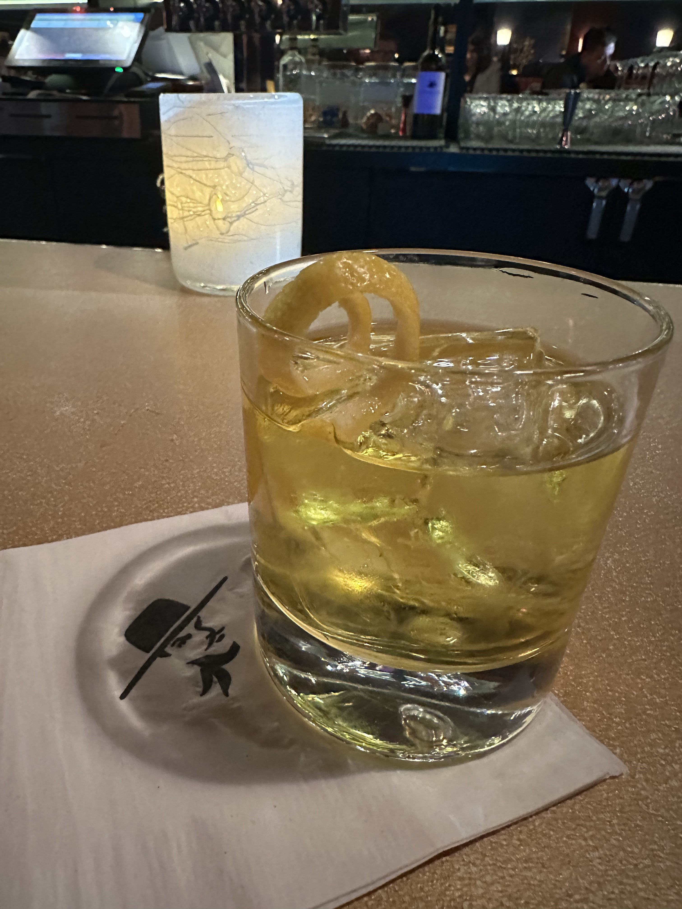

Home
White Negroni

Description
The Negroni is a timeless classic, a sophisticated blend of bitter
Campari, floral gin, and sweet vermouth. But what would happen if
you kept the gin and changed everything else?
An interesting twist celebrating different yet complimentary
elements, or a deadly poison?
Ingredients
- 1 oz. London Dry Gin
- 1 oz. Gentian liquer
- 1 oz. Lillet Blanc
- 3 drops saline solution
- 1 strip pink grapefruit zest
Steps
- Pre-chill an old fashioned glass
- Cut strip of pink grapefruit zest for garnish
- Pour all liquid ingredients into mixing glass
- Add copious amounts of ice and stir for about 20 seconds
- Add a large cube of ice to old fashioned glass
- Single-strain cocktail into glass
- Express pink grapefruit zest over glass and add as garnish
- Enjoy